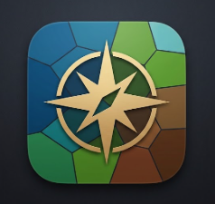

Kingdom Name
CARTAGRAPHIA
save map
projects
quit to hub
My Projects (Local Save)
Close
Cartographer

System Controls
Global Map Seed
313.00
Data Management
Save JSON
Load JSON
Export Image (PNG)
Camera
Scroll to zoom. Click & drag to pan.
Reset Camera
Continent Layout
Active Continents
5
Landmass 1
X Pos
Y Pos
X Scale
Y Scale
Landmass 2
X Pos
Y Pos
X Scale
Y Scale
Landmass 3
X Pos
Y Pos
X Scale
Y Scale
Landmass 4
X Pos
Y Pos
X Scale
Y Scale
Landmass 5
X Pos
Y Pos
X Scale
Y Scale
Terrain Sculpting
Macro Noise (Shape)
Scale
5.00
Distortion
0.81
Micro Noise (Shorelines)
Scale
20.20
Distortion
0.15
Climate & Rivers
Biomes
Desert Spread
0.21
Ice Caps
Pole Position
0.32
Pole Distort
0.54
Snow Spread
0.65
River Systems
River Seed
2838.00
Density (Scale)
5.00
River Width
0.110
Political Regions
Regions: OFF
Allow Regions on Poles
Generation
Region Seed
50
Name Seed
1
Region Count
125
Style
Overlay Opacity
0.30
Border Jaggedness
0.15
Border Thickness
0.001
Aesthetics & Colors
Post Processing
Soften (Anti-Alias)
0.10
Film Grain
0.04
Oceans & Beaches
Deep Ocean
Shallows
Coastal Shallows
Vegetation & Mountains
Coast Grass
Inland Grass
Mountains
Desert Biome
Desert Light
Desert Mid
Desert Dark
Polar Biome
Ice Light
Ice Dark